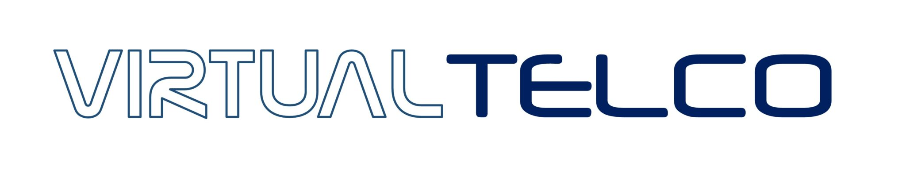

Convierte tus documentos y páginas web a Markdown limpio, listo para pegar como contexto en ChatGPT, Claude o cualquier herramienta de IA.
Windows 10/11 · 64 bits · No requiere Python instalado
Pega una URL y se descarga y convierte a Markdown, quitando menús, cabeceras y anuncios.
Suelta archivos directamente sobre la ventana, o pega rutas y URLs con Ctrl+V.
Selecciona varios archivos a la vez y conviértelos todos en un solo paso.
La conversión corre en segundo plano con una barra de progreso, la ventana sigue respondiendo.
Descarga el instalador o usa la versión portable, sin dependencias extra.
Selecciona archivos, arrástralos, o escribe/pega una URL.
Pulsa "Convertir" y obtén tu(s) archivo(s) .md listos para usar.